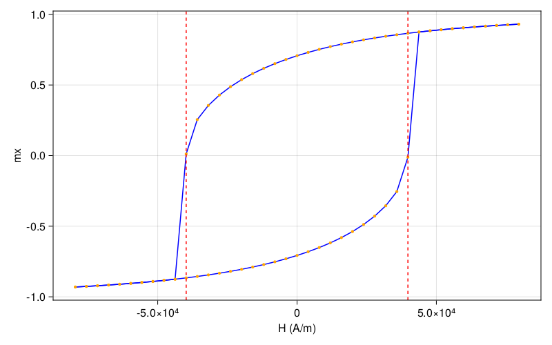

Stoner–Wohlfarth model


When the size of the studied system is below the exchange length, the magnetization of the system is uniform and thus can be described using a single 3d vector. In this situation, the demagnetization field can be calculated by simply multiplying the demagnetization tensor and the magnetization. Therefore, the demagnetization energy is equivalent to an effective anisotropy. Assuming that the external field $\vec{H}=(H, 0, 0)$, easy axis $\hat{u}=(\cos\theta, \sin\theta, 0)$ and unit magnetization vector $\hat{m}= (\cos\phi, \sin\phi, 0)$, we have
\[\begin{align} E &= - K (\vec{m} \cdot \hat{u})^2 - \mu_0 M_s H \cos \phi \\ &= -\frac{K}{2}\left[ 1 + \cos (2(\theta-\phi))+ 4 h \cos\phi \right ] \end{align}\]
where $h=H/H_k$ and $H_k = 2K/(\mu_0 M_s)$. In the equilibrium state, the first derivative of the energy with respect to the magnetization direction is zero, i.e.,
\[\frac{\partial E}{\partial \phi} = K [-\sin (2(\theta-\phi)) + 2 h \sin \phi] = 0\]
In principle, there will be a solution of $\phi$ for each given $h$ and $\theta$. The hysteresis loops can be constructed by plotting $\cos\phi$ as a function of $h$. The switching field can be obtained by extra setting the second derivative of the energy with respect to the magnetization direction to zero, i.e.,
\[\frac{\partial^2 E}{\partial \phi^2} = 2 K [\cos (2(\theta-\phi)) + h \cos \phi] = 0\]
The obtained switching field is
\[h_s=\frac{\left(1-t^2+t^4\right)^{1 / 2}}{1+t^2}\]
where $t=\tan ^{1 / 3} \theta$. Specifically, $h_s=1/2$ if $\theta=\pi/4$. In this example, we use JuMag to demostrate this result.
We chose the system to be a cubic sample, so the demagnetization tensor is $N_x=N_y=N_z=1/3$. That is, the demagnetization itself does not contribute to the effective anisotropy. So in this simulation, we have ignored the demagnetization field. The JuMag script is shown below:
using JuMag
function relax_sw_loop()
#We create a mesh for a cubic geometry 4nm x 4nm x 4nm
mesh = FDMeshGPU(nx=4, ny=4, nz=4, dx=1e-9, dy=1e-9, dz=1e-9)
#We create a simulation with the SD driver.
sim = Sim(mesh, name="sw_cubic", driver="SD")
#We set the saturation magnetization of the system.
set_Ms(sim, 1.0e6)
#Set the exchange constant
add_exch(sim, 1.3e-11)
#Set the initial state of the system.
init_m0(sim, (-1, 1, 0))
#Add the anisotropy
add_anis(sim, 5e4, axis=(1,1,0))
#Set the zeeman field.
add_zeeman(sim,(0,0,0))
#For each field, we relax the system to obtain its equilibrium state.
for i=-100:5:100
Hx = i*mT # A/m
update_zeeman(sim, (Hx,0,0))
#Relax the system with stopping_dmdt=0.05, the write_data function will be called if save_m_every is positive
relax(sim, maxsteps=10000, stopping_dmdt=0.05, save_m_every=10000)
end
endrelax_sw_loop (generic function with 1 method)Run the function
relax_sw_loop()[ Info: AnisotropyGPU has been added to the simulation.
[ Info: Running Driver : JuMag.EnergyMinimizationGPU{Float64}.
[ Info: step = 1 step_size=9.049774e-16 max_dmdt=3.562542e+02
[ Info: step = 2 step_size=9.049774e-11 max_dmdt=3.429404e+02
[ Info: step = 3 step_size=1.150860e-11 max_dmdt=3.421920e+02
[ Info: step = 4 step_size=9.049774e-11 max_dmdt=3.121671e+02
[ Info: step = 5 step_size=9.049774e-11 max_dmdt=3.567603e+01
[ Info: step = 6 step_size=7.141733e-11 max_dmdt=9.535099e+00
[ Info: step = 7 step_size=7.028064e-11 max_dmdt=1.538997e-01
[ Info: step = 8 step_size=7.055857e-11 max_dmdt=6.062300e-04
[ Info: max_dmdt is less than stopping_dmdt=0.05, Done!
[ Info: Running Driver : JuMag.EnergyMinimizationGPU{Float64}.
[ Info: step = 1 step_size=4.639375e-15 max_dmdt=9.220538e+00
[ Info: step = 2 step_size=7.265124e-11 max_dmdt=9.219792e+00
[ Info: step = 3 step_size=7.235180e-11 max_dmdt=3.784750e-02
[ Info: max_dmdt is less than stopping_dmdt=0.05, Done!
[ Info: Running Driver : JuMag.EnergyMinimizationGPU{Float64}.
[ Info: step = 1 step_size=2.873121e-13 max_dmdt=9.493021e+00
[ Info: step = 2 step_size=7.423062e-11 max_dmdt=9.456107e+00
[ Info: step = 3 step_size=7.392287e-11 max_dmdt=3.936698e-02
[ Info: max_dmdt is less than stopping_dmdt=0.05, Done!
[ Info: Running Driver : JuMag.EnergyMinimizationGPU{Float64}.
[ Info: step = 1 step_size=2.964224e-13 max_dmdt=9.778109e+00
[ Info: step = 2 step_size=7.587480e-11 max_dmdt=9.739706e+00
[ Info: step = 3 step_size=7.552968e-11 max_dmdt=4.410586e-02
[ Info: max_dmdt is less than stopping_dmdt=0.05, Done!
[ Info: Running Driver : JuMag.EnergyMinimizationGPU{Float64}.
[ Info: step = 1 step_size=3.291577e-13 max_dmdt=1.007658e+01
[ Info: step = 2 step_size=7.753516e-11 max_dmdt=1.003358e+01
[ Info: step = 3 step_size=7.718355e-11 max_dmdt=4.570972e-02
[ Info: max_dmdt is less than stopping_dmdt=0.05, Done!
[ Info: Running Driver : JuMag.EnergyMinimizationGPU{Float64}.
[ Info: step = 1 step_size=3.381040e-13 max_dmdt=1.038906e+01
[ Info: step = 2 step_size=7.926690e-11 max_dmdt=1.034448e+01
[ Info: step = 3 step_size=7.887214e-11 max_dmdt=5.125389e-02
[ Info: step = 4 step_size=7.849686e-11 max_dmdt=2.450335e-04
[ Info: max_dmdt is less than stopping_dmdt=0.05, Done!
[ Info: Running Driver : JuMag.EnergyMinimizationGPU{Float64}.
[ Info: step = 1 step_size=1.794961e-15 max_dmdt=1.071600e+01
[ Info: step = 2 step_size=8.102961e-11 max_dmdt=1.071546e+01
[ Info: step = 3 step_size=8.060900e-11 max_dmdt=5.530778e-02
[ Info: step = 4 step_size=8.020881e-11 max_dmdt=2.759490e-04
[ Info: max_dmdt is less than stopping_dmdt=0.05, Done!
[ Info: Running Driver : JuMag.EnergyMinimizationGPU{Float64}.
[ Info: step = 1 step_size=2.001545e-15 max_dmdt=1.105850e+01
[ Info: step = 2 step_size=8.283555e-11 max_dmdt=1.105788e+01
[ Info: step = 3 step_size=8.238897e-11 max_dmdt=5.924472e-02
[ Info: step = 4 step_size=8.196564e-11 max_dmdt=3.059849e-04
[ Info: max_dmdt is less than stopping_dmdt=0.05, Done!
[ Info: Running Driver : JuMag.EnergyMinimizationGPU{Float64}.
[ Info: step = 1 step_size=2.196798e-15 max_dmdt=1.141703e+01
[ Info: step = 2 step_size=8.468841e-11 max_dmdt=1.141633e+01
[ Info: step = 3 step_size=8.421614e-11 max_dmdt=6.322369e-02
[ Info: step = 4 step_size=8.377032e-11 max_dmdt=3.364727e-04
[ Info: max_dmdt is less than stopping_dmdt=0.05, Done!
[ Info: Running Driver : JuMag.EnergyMinimizationGPU{Float64}.
[ Info: step = 1 step_size=2.390315e-15 max_dmdt=1.179226e+01
[ Info: step = 2 step_size=8.659099e-11 max_dmdt=1.179147e+01
[ Info: step = 3 step_size=8.609394e-11 max_dmdt=6.715862e-02
[ Info: step = 4 step_size=8.562696e-11 max_dmdt=3.662648e-04
[ Info: max_dmdt is less than stopping_dmdt=0.05, Done!
[ Info: Running Driver : JuMag.EnergyMinimizationGPU{Float64}.
[ Info: step = 1 step_size=2.573938e-15 max_dmdt=1.218487e+01
[ Info: step = 2 step_size=8.854724e-11 max_dmdt=1.218397e+01
[ Info: step = 3 step_size=8.802712e-11 max_dmdt=7.093290e-02
[ Info: step = 4 step_size=8.754114e-11 max_dmdt=3.937793e-04
[ Info: max_dmdt is less than stopping_dmdt=0.05, Done!
[ Info: Running Driver : JuMag.EnergyMinimizationGPU{Float64}.
[ Info: step = 1 step_size=2.736929e-15 max_dmdt=1.259549e+01
[ Info: step = 2 step_size=9.049774e-11 max_dmdt=1.259449e+01
[ Info: step = 3 step_size=9.002248e-11 max_dmdt=6.526630e-02
[ Info: step = 4 step_size=8.952076e-11 max_dmdt=3.657859e-04
[ Info: max_dmdt is less than stopping_dmdt=0.05, Done!
[ Info: Running Driver : JuMag.EnergyMinimizationGPU{Float64}.
[ Info: step = 1 step_size=2.514160e-15 max_dmdt=1.302477e+01
[ Info: step = 2 step_size=9.049774e-11 max_dmdt=1.302373e+01
[ Info: step = 3 step_size=9.049774e-11 max_dmdt=2.279384e-01
[ Info: step = 4 step_size=9.049774e-11 max_dmdt=2.709780e-03
[ Info: max_dmdt is less than stopping_dmdt=0.05, Done!
[ Info: Running Driver : JuMag.EnergyMinimizationGPU{Float64}.
[ Info: step = 1 step_size=1.820470e-14 max_dmdt=1.347335e+01
[ Info: step = 2 step_size=9.049774e-11 max_dmdt=1.347000e+01
[ Info: step = 3 step_size=9.049774e-11 max_dmdt=5.391497e-01
[ Info: step = 4 step_size=9.049774e-11 max_dmdt=1.865617e-02
[ Info: max_dmdt is less than stopping_dmdt=0.05, Done!
[ Info: Running Driver : JuMag.EnergyMinimizationGPU{Float64}.
[ Info: step = 1 step_size=1.212570e-13 max_dmdt=1.394232e+01
[ Info: step = 2 step_size=9.049774e-11 max_dmdt=1.392406e+01
[ Info: step = 3 step_size=9.049774e-11 max_dmdt=8.700594e-01
[ Info: step = 4 step_size=9.049774e-11 max_dmdt=4.989130e-02
[ Info: max_dmdt is less than stopping_dmdt=0.05, Done!
[ Info: Running Driver : JuMag.EnergyMinimizationGPU{Float64}.
[ Info: step = 1 step_size=3.139092e-13 max_dmdt=1.443319e+01
[ Info: step = 2 step_size=9.049774e-11 max_dmdt=1.438668e+01
[ Info: step = 3 step_size=9.049774e-11 max_dmdt=1.222947e+00
[ Info: step = 4 step_size=9.049774e-11 max_dmdt=9.813226e-02
[ Info: step = 5 step_size=9.049774e-11 max_dmdt=7.837850e-03
[ Info: max_dmdt is less than stopping_dmdt=0.05, Done!
[ Info: Running Driver : JuMag.EnergyMinimizationGPU{Float64}.
[ Info: step = 1 step_size=4.750001e-14 max_dmdt=1.494063e+01
[ Info: step = 2 step_size=9.049774e-11 max_dmdt=1.493262e+01
[ Info: step = 3 step_size=9.049774e-11 max_dmdt=1.609154e+00
[ Info: step = 4 step_size=9.049774e-11 max_dmdt=1.664993e-01
[ Info: step = 5 step_size=9.049774e-11 max_dmdt=1.715835e-02
[ Info: max_dmdt is less than stopping_dmdt=0.05, Done!
[ Info: Running Driver : JuMag.EnergyMinimizationGPU{Float64}.
[ Info: step = 1 step_size=1.004692e-13 max_dmdt=1.547257e+01
[ Info: step = 2 step_size=9.049774e-11 max_dmdt=1.545654e+01
[ Info: step = 3 step_size=9.049774e-11 max_dmdt=2.023142e+00
[ Info: step = 4 step_size=9.049774e-11 max_dmdt=2.573853e-01
[ Info: step = 5 step_size=9.049774e-11 max_dmdt=3.263682e-02
[ Info: max_dmdt is less than stopping_dmdt=0.05, Done!
[ Info: Running Driver : JuMag.EnergyMinimizationGPU{Float64}.
[ Info: step = 1 step_size=1.846590e-13 max_dmdt=1.602730e+01
[ Info: step = 2 step_size=9.049774e-11 max_dmdt=1.599846e+01
[ Info: step = 3 step_size=9.049774e-11 max_dmdt=2.473897e+00
[ Info: step = 4 step_size=9.049774e-11 max_dmdt=3.753743e-01
[ Info: step = 5 step_size=9.049774e-11 max_dmdt=5.681881e-02
[ Info: step = 6 step_size=9.049774e-11 max_dmdt=8.597352e-03
[ Info: max_dmdt is less than stopping_dmdt=0.05, Done!
[ Info: Running Driver : JuMag.EnergyMinimizationGPU{Float64}.
[ Info: step = 1 step_size=4.689734e-14 max_dmdt=1.659889e+01
[ Info: step = 2 step_size=9.049774e-11 max_dmdt=1.659043e+01
[ Info: step = 3 step_size=9.049774e-11 max_dmdt=2.973906e+00
[ Info: step = 4 step_size=9.049774e-11 max_dmdt=5.272698e-01
[ Info: step = 5 step_size=9.049774e-11 max_dmdt=9.335371e-02
[ Info: step = 6 step_size=9.049774e-11 max_dmdt=1.652459e-02
[ Info: max_dmdt is less than stopping_dmdt=0.05, Done!
[ Info: Running Driver : JuMag.EnergyMinimizationGPU{Float64}.
[ Info: step = 1 step_size=8.704342e-14 max_dmdt=1.719689e+01
[ Info: step = 2 step_size=9.049774e-11 max_dmdt=1.718217e+01
[ Info: step = 3 step_size=9.049774e-11 max_dmdt=3.523423e+00
[ Info: step = 4 step_size=9.049774e-11 max_dmdt=7.196959e-01
[ Info: step = 5 step_size=9.049774e-11 max_dmdt=1.469811e-01
[ Info: step = 6 step_size=9.049774e-11 max_dmdt=3.001728e-02
[ Info: max_dmdt is less than stopping_dmdt=0.05, Done!
[ Info: Running Driver : JuMag.EnergyMinimizationGPU{Float64}.
[ Info: step = 1 step_size=1.527098e-13 max_dmdt=1.781863e+01
[ Info: step = 2 step_size=9.049774e-11 max_dmdt=1.779379e+01
[ Info: step = 3 step_size=9.049774e-11 max_dmdt=4.136218e+00
[ Info: step = 4 step_size=9.049774e-11 max_dmdt=9.639116e-01
[ Info: step = 5 step_size=9.049774e-11 max_dmdt=2.249229e-01
[ Info: step = 6 step_size=9.049774e-11 max_dmdt=5.250223e-02
[ Info: step = 7 step_size=9.049774e-11 max_dmdt=1.225624e-02
[ Info: max_dmdt is less than stopping_dmdt=0.05, Done!
[ Info: Running Driver : JuMag.EnergyMinimizationGPU{Float64}.
[ Info: step = 1 step_size=6.013635e-14 max_dmdt=1.845638e+01
[ Info: step = 2 step_size=9.049774e-11 max_dmdt=1.844535e+01
[ Info: step = 3 step_size=9.049774e-11 max_dmdt=4.830884e+00
[ Info: step = 4 step_size=9.049774e-11 max_dmdt=1.276125e+00
[ Info: step = 5 step_size=9.049774e-11 max_dmdt=3.381213e-01
[ Info: step = 6 step_size=9.049774e-11 max_dmdt=8.966481e-02
[ Info: step = 7 step_size=9.049774e-11 max_dmdt=2.378324e-02
[ Info: max_dmdt is less than stopping_dmdt=0.05, Done!
[ Info: Running Driver : JuMag.EnergyMinimizationGPU{Float64}.
[ Info: step = 1 step_size=1.126931e-13 max_dmdt=1.912282e+01
[ Info: step = 2 step_size=9.049774e-11 max_dmdt=1.910377e+01
[ Info: step = 3 step_size=9.049774e-11 max_dmdt=5.616728e+00
[ Info: step = 4 step_size=9.049774e-11 max_dmdt=1.675245e+00
[ Info: step = 5 step_size=9.049774e-11 max_dmdt=5.021924e-01
[ Info: step = 6 step_size=9.049774e-11 max_dmdt=1.507817e-01
[ Info: step = 7 step_size=9.049774e-11 max_dmdt=4.529348e-02
[ Info: max_dmdt is less than stopping_dmdt=0.05, Done!
[ Info: Running Driver : JuMag.EnergyMinimizationGPU{Float64}.
[ Info: step = 1 step_size=2.073344e-13 max_dmdt=1.981508e+01
[ Info: step = 2 step_size=9.049774e-11 max_dmdt=1.978203e+01
[ Info: step = 3 step_size=9.049774e-11 max_dmdt=6.519075e+00
[ Info: step = 4 step_size=9.049774e-11 max_dmdt=2.191477e+00
[ Info: step = 5 step_size=9.049774e-11 max_dmdt=7.422047e-01
[ Info: step = 6 step_size=9.049774e-11 max_dmdt=2.520233e-01
[ Info: step = 7 step_size=9.049774e-11 max_dmdt=8.565351e-02
[ Info: step = 8 step_size=9.049774e-11 max_dmdt=2.911936e-02
[ Info: max_dmdt is less than stopping_dmdt=0.05, Done!
[ Info: Running Driver : JuMag.EnergyMinimizationGPU{Float64}.
[ Info: step = 1 step_size=1.286140e-13 max_dmdt=2.051861e+01
[ Info: step = 2 step_size=9.049774e-11 max_dmdt=2.049735e+01
[ Info: step = 3 step_size=9.049774e-11 max_dmdt=7.573798e+00
[ Info: step = 4 step_size=9.049774e-11 max_dmdt=2.870036e+00
[ Info: step = 5 step_size=9.049774e-11 max_dmdt=1.098808e+00
[ Info: step = 6 step_size=9.049774e-11 max_dmdt=4.223793e-01
[ Info: step = 7 step_size=9.049774e-11 max_dmdt=1.626149e-01
[ Info: step = 8 step_size=9.049774e-11 max_dmdt=6.264397e-02
[ Info: step = 9 step_size=9.049774e-11 max_dmdt=2.413787e-02
[ Info: max_dmdt is less than stopping_dmdt=0.05, Done!
[ Info: Running Driver : JuMag.EnergyMinimizationGPU{Float64}.
[ Info: step = 1 step_size=1.029290e-13 max_dmdt=2.124674e+01
[ Info: step = 2 step_size=9.049774e-11 max_dmdt=2.122943e+01
[ Info: step = 3 step_size=9.049774e-11 max_dmdt=8.815950e+00
[ Info: step = 4 step_size=9.049774e-11 max_dmdt=3.773851e+00
[ Info: step = 5 step_size=9.049774e-11 max_dmdt=1.637580e+00
[ Info: step = 6 step_size=9.049774e-11 max_dmdt=7.148579e-01
[ Info: step = 7 step_size=9.049774e-11 max_dmdt=3.128805e-01
[ Info: step = 8 step_size=9.049774e-11 max_dmdt=1.371002e-01
[ Info: step = 9 step_size=9.049774e-11 max_dmdt=6.010592e-02
[ Info: step = 10 step_size=9.049774e-11 max_dmdt=2.635681e-02
[ Info: max_dmdt is less than stopping_dmdt=0.05, Done!
[ Info: Running Driver : JuMag.EnergyMinimizationGPU{Float64}.
[ Info: step = 1 step_size=1.085551e-13 max_dmdt=2.199889e+01
[ Info: step = 2 step_size=9.049774e-11 max_dmdt=2.198128e+01
[ Info: step = 3 step_size=9.049774e-11 max_dmdt=1.030647e+01
[ Info: step = 4 step_size=9.049774e-11 max_dmdt=5.005692e+00
[ Info: step = 5 step_size=9.049774e-11 max_dmdt=2.474120e+00
[ Info: step = 6 step_size=9.049774e-11 max_dmdt=1.233568e+00
[ Info: step = 7 step_size=9.049774e-11 max_dmdt=6.177296e-01
[ Info: step = 8 step_size=9.049774e-11 max_dmdt=3.100150e-01
[ Info: step = 9 step_size=9.049774e-11 max_dmdt=1.557556e-01
[ Info: step = 10 step_size=9.049774e-11 max_dmdt=7.829683e-02
[ Info: step = 11 step_size=9.049774e-11 max_dmdt=3.936997e-02
[ Info: max_dmdt is less than stopping_dmdt=0.05, Done!
[ Info: Running Driver : JuMag.EnergyMinimizationGPU{Float64}.
[ Info: step = 1 step_size=1.566913e-13 max_dmdt=2.277766e+01
[ Info: step = 2 step_size=9.049774e-11 max_dmdt=2.275506e+01
[ Info: step = 3 step_size=9.049774e-11 max_dmdt=1.214107e+01
[ Info: step = 4 step_size=9.049774e-11 max_dmdt=6.740485e+00
[ Info: step = 5 step_size=9.049774e-11 max_dmdt=3.825996e+00
[ Info: step = 6 step_size=9.049774e-11 max_dmdt=2.199136e+00
[ Info: step = 7 step_size=9.049774e-11 max_dmdt=1.273180e+00
[ Info: step = 8 step_size=9.049774e-11 max_dmdt=7.401804e-01
[ Info: step = 9 step_size=9.049774e-11 max_dmdt=4.313571e-01
[ Info: step = 10 step_size=9.049774e-11 max_dmdt=2.517381e-01
[ Info: step = 11 step_size=9.049774e-11 max_dmdt=1.470341e-01
[ Info: step = 12 step_size=9.049774e-11 max_dmdt=8.592038e-02
[ Info: step = 13 step_size=9.049774e-11 max_dmdt=5.022225e-02
[ Info: step = 14 step_size=9.049774e-11 max_dmdt=2.936077e-02
[ Info: max_dmdt is less than stopping_dmdt=0.05, Done!
[ Info: Running Driver : JuMag.EnergyMinimizationGPU{Float64}.
[ Info: step = 1 step_size=1.128899e-13 max_dmdt=2.356629e+01
[ Info: step = 2 step_size=9.049774e-11 max_dmdt=2.355042e+01
[ Info: step = 3 step_size=9.049774e-11 max_dmdt=1.449136e+01
[ Info: step = 4 step_size=9.049774e-11 max_dmdt=9.315316e+00
[ Info: step = 5 step_size=9.049774e-11 max_dmdt=6.156271e+00
[ Info: step = 6 step_size=9.049774e-11 max_dmdt=4.142818e+00
[ Info: step = 7 step_size=9.049774e-11 max_dmdt=2.821729e+00
[ Info: step = 8 step_size=9.049774e-11 max_dmdt=1.937680e+00
[ Info: step = 9 step_size=9.049774e-11 max_dmdt=1.338054e+00
[ Info: step = 10 step_size=9.049774e-11 max_dmdt=9.275437e-01
[ Info: step = 11 step_size=9.049774e-11 max_dmdt=6.446881e-01
[ Info: step = 12 step_size=9.049774e-11 max_dmdt=4.489170e-01
[ Info: step = 13 step_size=9.049774e-11 max_dmdt=3.129967e-01
[ Info: step = 14 step_size=9.049774e-11 max_dmdt=2.184247e-01
[ Info: step = 15 step_size=9.049774e-11 max_dmdt=1.525227e-01
[ Info: step = 16 step_size=9.049774e-11 max_dmdt=1.065507e-01
[ Info: step = 17 step_size=9.049774e-11 max_dmdt=7.445775e-02
[ Info: step = 18 step_size=9.049774e-11 max_dmdt=5.204223e-02
[ Info: step = 19 step_size=9.049774e-11 max_dmdt=3.638031e-02
[ Info: max_dmdt is less than stopping_dmdt=0.05, Done!
[ Info: Running Driver : JuMag.EnergyMinimizationGPU{Float64}.
[ Info: step = 1 step_size=1.352149e-13 max_dmdt=2.438529e+01
[ Info: step = 2 step_size=9.049774e-11 max_dmdt=2.437018e+01
[ Info: step = 3 step_size=9.049774e-11 max_dmdt=1.776707e+01
[ Info: step = 4 step_size=9.049774e-11 max_dmdt=1.357181e+01
[ Info: step = 5 step_size=9.049774e-11 max_dmdt=1.073081e+01
[ Info: step = 6 step_size=9.049774e-11 max_dmdt=8.712411e+00
[ Info: step = 7 step_size=9.049774e-11 max_dmdt=7.223942e+00
[ Info: step = 8 step_size=9.049774e-11 max_dmdt=6.093014e+00
[ Info: step = 9 step_size=9.049774e-11 max_dmdt=5.212495e+00
[ Info: step = 10 step_size=9.049774e-11 max_dmdt=4.512835e+00
[ Info: step = 11 step_size=9.049774e-11 max_dmdt=3.947213e+00
[ Info: step = 12 step_size=9.049774e-11 max_dmdt=3.483133e+00
[ Info: step = 13 step_size=9.049774e-11 max_dmdt=3.097446e+00
[ Info: step = 14 step_size=9.049774e-11 max_dmdt=2.773285e+00
[ Info: step = 15 step_size=9.049774e-11 max_dmdt=2.498113e+00
[ Info: step = 16 step_size=9.049774e-11 max_dmdt=2.262452e+00
[ Info: step = 17 step_size=9.049774e-11 max_dmdt=2.059022e+00
[ Info: step = 18 step_size=9.049774e-11 max_dmdt=1.882157e+00
[ Info: step = 19 step_size=9.049774e-11 max_dmdt=1.727390e+00
[ Info: step = 20 step_size=9.049774e-11 max_dmdt=1.591159e+00
[ Info: step = 21 step_size=9.049774e-11 max_dmdt=1.470597e+00
[ Info: step = 22 step_size=9.049774e-11 max_dmdt=1.363373e+00
[ Info: step = 23 step_size=9.049774e-11 max_dmdt=1.267577e+00
[ Info: step = 24 step_size=9.049774e-11 max_dmdt=1.181629e+00
[ Info: step = 25 step_size=9.049774e-11 max_dmdt=1.104215e+00
[ Info: step = 26 step_size=9.049774e-11 max_dmdt=1.034235e+00
[ Info: step = 27 step_size=9.049774e-11 max_dmdt=9.707608e-01
[ Info: step = 28 step_size=9.049774e-11 max_dmdt=9.130050e-01
[ Info: step = 29 step_size=9.049774e-11 max_dmdt=8.602970e-01
[ Info: step = 30 step_size=9.049774e-11 max_dmdt=8.120618e-01
[ Info: step = 31 step_size=9.049774e-11 max_dmdt=7.678043e-01
[ Info: step = 32 step_size=9.049774e-11 max_dmdt=7.270966e-01
[ Info: step = 33 step_size=9.049774e-11 max_dmdt=6.895668e-01
[ Info: step = 34 step_size=9.049774e-11 max_dmdt=6.548908e-01
[ Info: step = 35 step_size=9.049774e-11 max_dmdt=6.227850e-01
[ Info: step = 36 step_size=9.049774e-11 max_dmdt=5.930002e-01
[ Info: step = 37 step_size=9.049774e-11 max_dmdt=5.653168e-01
[ Info: step = 38 step_size=9.049774e-11 max_dmdt=5.395407e-01
[ Info: step = 39 step_size=9.049774e-11 max_dmdt=5.154999e-01
[ Info: step = 40 step_size=9.049774e-11 max_dmdt=4.930412e-01
[ Info: step = 41 step_size=9.049774e-11 max_dmdt=4.720282e-01
[ Info: step = 42 step_size=9.049774e-11 max_dmdt=4.523389e-01
[ Info: step = 43 step_size=9.049774e-11 max_dmdt=4.338638e-01
[ Info: step = 44 step_size=9.049774e-11 max_dmdt=4.165047e-01
[ Info: step = 45 step_size=9.049774e-11 max_dmdt=4.001731e-01
[ Info: step = 46 step_size=9.049774e-11 max_dmdt=3.847892e-01
[ Info: step = 47 step_size=9.049774e-11 max_dmdt=3.702807e-01
[ Info: step = 48 step_size=9.049774e-11 max_dmdt=3.565821e-01
[ Info: step = 49 step_size=9.049774e-11 max_dmdt=3.436341e-01
[ Info: step = 50 step_size=9.049774e-11 max_dmdt=3.313825e-01
[ Info: step = 51 step_size=9.049774e-11 max_dmdt=3.197782e-01
[ Info: step = 52 step_size=9.049774e-11 max_dmdt=3.087761e-01
[ Info: step = 53 step_size=9.049774e-11 max_dmdt=2.983351e-01
[ Info: step = 54 step_size=9.049774e-11 max_dmdt=2.884175e-01
[ Info: step = 55 step_size=9.049774e-11 max_dmdt=2.789889e-01
[ Info: step = 56 step_size=9.049774e-11 max_dmdt=2.700175e-01
[ Info: step = 57 step_size=9.049774e-11 max_dmdt=2.614740e-01
[ Info: step = 58 step_size=9.049774e-11 max_dmdt=2.533317e-01
[ Info: step = 59 step_size=9.049774e-11 max_dmdt=2.455656e-01
[ Info: step = 60 step_size=9.049774e-11 max_dmdt=2.381529e-01
[ Info: step = 61 step_size=9.049774e-11 max_dmdt=2.310724e-01
[ Info: step = 62 step_size=9.049774e-11 max_dmdt=2.243045e-01
[ Info: step = 63 step_size=9.049774e-11 max_dmdt=2.178309e-01
[ Info: step = 64 step_size=9.049774e-11 max_dmdt=2.116349e-01
[ Info: step = 65 step_size=9.049774e-11 max_dmdt=2.057006e-01
[ Info: step = 66 step_size=9.049774e-11 max_dmdt=2.000135e-01
[ Info: step = 67 step_size=9.049774e-11 max_dmdt=1.945601e-01
[ Info: step = 68 step_size=9.049774e-11 max_dmdt=1.893276e-01
[ Info: step = 69 step_size=9.049774e-11 max_dmdt=1.843043e-01
[ Info: step = 70 step_size=9.049774e-11 max_dmdt=1.794791e-01
[ Info: step = 71 step_size=9.049774e-11 max_dmdt=1.748417e-01
[ Info: step = 72 step_size=9.049774e-11 max_dmdt=1.703825e-01
[ Info: step = 73 step_size=9.049774e-11 max_dmdt=1.660924e-01
[ Info: step = 74 step_size=9.049774e-11 max_dmdt=1.619629e-01
[ Info: step = 75 step_size=9.049774e-11 max_dmdt=1.579861e-01
[ Info: step = 76 step_size=9.049774e-11 max_dmdt=1.541546e-01
[ Info: step = 77 step_size=9.049774e-11 max_dmdt=1.504613e-01
[ Info: step = 78 step_size=9.049774e-11 max_dmdt=1.468997e-01
[ Info: step = 79 step_size=9.049774e-11 max_dmdt=1.434635e-01
[ Info: step = 80 step_size=9.049774e-11 max_dmdt=1.401469e-01
[ Info: step = 81 step_size=9.049774e-11 max_dmdt=1.369444e-01
[ Info: step = 82 step_size=9.049774e-11 max_dmdt=1.338508e-01
[ Info: step = 83 step_size=9.049774e-11 max_dmdt=1.308613e-01
[ Info: step = 84 step_size=9.049774e-11 max_dmdt=1.279712e-01
[ Info: step = 85 step_size=9.049774e-11 max_dmdt=1.251760e-01
[ Info: step = 86 step_size=9.049774e-11 max_dmdt=1.224718e-01
[ Info: step = 87 step_size=9.049774e-11 max_dmdt=1.198546e-01
[ Info: step = 88 step_size=9.049774e-11 max_dmdt=1.173207e-01
[ Info: step = 89 step_size=9.049774e-11 max_dmdt=1.148665e-01
[ Info: step = 90 step_size=9.049774e-11 max_dmdt=1.124888e-01
[ Info: step = 91 step_size=9.049774e-11 max_dmdt=1.101844e-01
[ Info: step = 92 step_size=9.049774e-11 max_dmdt=1.079504e-01
[ Info: step = 93 step_size=9.049774e-11 max_dmdt=1.057838e-01
[ Info: step = 94 step_size=9.049774e-11 max_dmdt=1.036820e-01
[ Info: step = 95 step_size=9.049774e-11 max_dmdt=1.016424e-01
[ Info: step = 96 step_size=9.049774e-11 max_dmdt=9.966256e-02
[ Info: step = 97 step_size=9.049774e-11 max_dmdt=9.774022e-02
[ Info: step = 98 step_size=9.049774e-11 max_dmdt=9.587313e-02
[ Info: step = 99 step_size=9.049774e-11 max_dmdt=9.405920e-02
[ Info: step = 100 step_size=9.049774e-11 max_dmdt=9.229641e-02
[ Info: step = 101 step_size=9.049774e-11 max_dmdt=9.058287e-02
[ Info: step = 102 step_size=9.049774e-11 max_dmdt=8.891675e-02
[ Info: step = 103 step_size=9.049774e-11 max_dmdt=8.729631e-02
[ Info: step = 104 step_size=9.049774e-11 max_dmdt=8.571989e-02
[ Info: step = 105 step_size=9.049774e-11 max_dmdt=8.418592e-02
[ Info: step = 106 step_size=9.049774e-11 max_dmdt=8.269287e-02
[ Info: step = 107 step_size=9.049774e-11 max_dmdt=8.123930e-02
[ Info: step = 108 step_size=9.049774e-11 max_dmdt=7.982383e-02
[ Info: step = 109 step_size=9.049774e-11 max_dmdt=7.844514e-02
[ Info: step = 110 step_size=9.049774e-11 max_dmdt=7.710195e-02
[ Info: step = 111 step_size=9.049774e-11 max_dmdt=7.579307e-02
[ Info: step = 112 step_size=9.049774e-11 max_dmdt=7.451732e-02
[ Info: step = 113 step_size=9.049774e-11 max_dmdt=7.327360e-02
[ Info: step = 114 step_size=9.049774e-11 max_dmdt=7.206084e-02
[ Info: step = 115 step_size=9.049774e-11 max_dmdt=7.087803e-02
[ Info: step = 116 step_size=9.049774e-11 max_dmdt=6.972417e-02
[ Info: step = 117 step_size=9.049774e-11 max_dmdt=6.859834e-02
[ Info: step = 118 step_size=9.049774e-11 max_dmdt=6.749962e-02
[ Info: step = 119 step_size=9.049774e-11 max_dmdt=6.642716e-02
[ Info: step = 120 step_size=9.049774e-11 max_dmdt=6.538012e-02
[ Info: step = 121 step_size=9.049774e-11 max_dmdt=6.435771e-02
[ Info: step = 122 step_size=9.049774e-11 max_dmdt=6.335915e-02
[ Info: step = 123 step_size=9.049774e-11 max_dmdt=6.238371e-02
[ Info: step = 124 step_size=9.049774e-11 max_dmdt=6.143067e-02
[ Info: step = 125 step_size=9.049774e-11 max_dmdt=6.049937e-02
[ Info: step = 126 step_size=9.049774e-11 max_dmdt=5.958913e-02
[ Info: step = 127 step_size=9.049774e-11 max_dmdt=5.869934e-02
[ Info: step = 128 step_size=9.049774e-11 max_dmdt=5.782937e-02
[ Info: step = 129 step_size=9.049774e-11 max_dmdt=5.697865e-02
[ Info: step = 130 step_size=9.049774e-11 max_dmdt=5.614660e-02
[ Info: step = 131 step_size=9.049774e-11 max_dmdt=5.533269e-02
[ Info: step = 132 step_size=9.049774e-11 max_dmdt=5.453639e-02
[ Info: step = 133 step_size=9.049774e-11 max_dmdt=5.375720e-02
[ Info: step = 134 step_size=9.049774e-11 max_dmdt=5.299463e-02
[ Info: step = 135 step_size=9.049774e-11 max_dmdt=5.224821e-02
[ Info: step = 136 step_size=9.049774e-11 max_dmdt=5.151748e-02
[ Info: step = 137 step_size=9.049774e-11 max_dmdt=5.080200e-02
[ Info: step = 138 step_size=9.049774e-11 max_dmdt=5.010137e-02
[ Info: step = 139 step_size=9.049774e-11 max_dmdt=4.941516e-02
[ Info: max_dmdt is less than stopping_dmdt=0.05, Done!
[ Info: Running Driver : JuMag.EnergyMinimizationGPU{Float64}.
[ Info: step = 1 step_size=1.775385e-13 max_dmdt=2.523810e+01
[ Info: step = 2 step_size=9.049774e-11 max_dmdt=2.523244e+01
[ Info: step = 3 step_size=9.049774e-11 max_dmdt=2.548401e+01
[ Info: step = 4 step_size=9.049774e-11 max_dmdt=2.691195e+01
[ Info: step = 5 step_size=9.049774e-11 max_dmdt=2.968705e+01
[ Info: step = 6 step_size=9.049774e-11 max_dmdt=3.422662e+01
[ Info: step = 7 step_size=9.049774e-11 max_dmdt=4.131688e+01
[ Info: step = 8 step_size=9.049774e-11 max_dmdt=5.237075e+01
[ Info: step = 9 step_size=9.049774e-11 max_dmdt=6.991791e+01
[ Info: step = 10 step_size=9.049774e-11 max_dmdt=9.840942e+01
[ Info: step = 11 step_size=9.049774e-11 max_dmdt=1.447725e+02
[ Info: step = 12 step_size=9.049774e-11 max_dmdt=2.138403e+02
[ Info: step = 13 step_size=9.049774e-11 max_dmdt=2.787324e+02
[ Info: step = 14 step_size=9.049774e-11 max_dmdt=2.270026e+02
[ Info: step = 15 step_size=9.049774e-11 max_dmdt=4.972761e+01
[ Info: step = 16 step_size=8.786683e-11 max_dmdt=1.490092e+00
[ Info: step = 17 step_size=8.557397e-11 max_dmdt=3.992355e-02
[ Info: max_dmdt is less than stopping_dmdt=0.05, Done!
[ Info: Running Driver : JuMag.EnergyMinimizationGPU{Float64}.
[ Info: step = 1 step_size=2.794670e-13 max_dmdt=1.218484e+01
[ Info: step = 2 step_size=8.287366e-11 max_dmdt=1.214329e+01
[ Info: step = 3 step_size=8.332800e-11 max_dmdt=6.621298e-02
[ Info: step = 4 step_size=8.377018e-11 max_dmdt=3.495011e-04
[ Info: max_dmdt is less than stopping_dmdt=0.05, Done!
[ Info: Running Driver : JuMag.EnergyMinimizationGPU{Float64}.
[ Info: step = 1 step_size=2.482868e-15 max_dmdt=1.179226e+01
[ Info: step = 2 step_size=8.110948e-11 max_dmdt=1.179149e+01
[ Info: step = 3 step_size=8.154219e-11 max_dmdt=6.257416e-02
[ Info: step = 4 step_size=8.196549e-11 max_dmdt=3.231563e-04
[ Info: max_dmdt is less than stopping_dmdt=0.05, Done!
[ Info: Running Driver : JuMag.EnergyMinimizationGPU{Float64}.
[ Info: step = 1 step_size=2.320079e-15 max_dmdt=1.141703e+01
[ Info: step = 2 step_size=7.939674e-11 max_dmdt=1.141634e+01
[ Info: step = 3 step_size=7.980683e-11 max_dmdt=5.866547e-02
[ Info: step = 4 step_size=8.020867e-11 max_dmdt=2.939064e-04
[ Info: max_dmdt is less than stopping_dmdt=0.05, Done!
[ Info: Running Driver : JuMag.EnergyMinimizationGPU{Float64}.
[ Info: step = 1 step_size=2.131795e-15 max_dmdt=1.105850e+01
[ Info: step = 2 step_size=7.772981e-11 max_dmdt=1.105789e+01
[ Info: step = 3 step_size=7.811691e-11 max_dmdt=5.479800e-02
[ Info: step = 4 step_size=7.849672e-11 max_dmdt=2.651423e-04
[ Info: max_dmdt is less than stopping_dmdt=0.05, Done!
[ Info: Running Driver : JuMag.EnergyMinimizationGPU{Float64}.
[ Info: step = 1 step_size=1.942264e-15 max_dmdt=1.071600e+01
[ Info: step = 2 step_size=7.610564e-11 max_dmdt=1.071546e+01
[ Info: step = 3 step_size=7.646981e-11 max_dmdt=5.103146e-02
[ Info: step = 4 step_size=7.682750e-11 max_dmdt=2.375941e-04
[ Info: max_dmdt is less than stopping_dmdt=0.05, Done!
[ Info: Running Driver : JuMag.EnergyMinimizationGPU{Float64}.
[ Info: step = 1 step_size=1.757092e-15 max_dmdt=1.038886e+01
[ Info: step = 2 step_size=7.452199e-11 max_dmdt=1.038837e+01
[ Info: step = 3 step_size=7.486363e-11 max_dmdt=4.740761e-02
[ Info: max_dmdt is less than stopping_dmdt=0.05, Done!
[ Info: Running Driver : JuMag.EnergyMinimizationGPU{Float64}.
[ Info: step = 1 step_size=3.538771e-13 max_dmdt=1.007661e+01
[ Info: step = 2 step_size=7.299072e-11 max_dmdt=1.002755e+01
[ Info: step = 3 step_size=7.329548e-11 max_dmdt=4.210952e-02
[ Info: max_dmdt is less than stopping_dmdt=0.05, Done!
[ Info: Running Driver : JuMag.EnergyMinimizationGPU{Float64}.
[ Info: step = 1 step_size=3.170121e-13 max_dmdt=9.778134e+00
[ Info: step = 2 step_size=7.147152e-11 max_dmdt=9.734590e+00
[ Info: step = 3 step_size=7.177016e-11 max_dmdt=4.050696e-02
[ Info: max_dmdt is less than stopping_dmdt=0.05, Done!
[ Info: Running Driver : JuMag.EnergyMinimizationGPU{Float64}.
[ Info: step = 1 step_size=3.075567e-13 max_dmdt=9.493044e+00
[ Info: step = 2 step_size=7.001063e-11 max_dmdt=9.451183e+00
[ Info: step = 3 step_size=7.027741e-11 max_dmdt=3.619669e-02
[ Info: max_dmdt is less than stopping_dmdt=0.05, Done!
For the used anisotropy $K_u=5e4$ A/m$^3$, the expected switch field is $H_c = (1/2) H_K = 39788.7$ A/m. We plot the hysteresis loops using the following function
using DelimitedFiles
using CairoMakie
function plot_loop()
folder = @__DIR__
data = readdlm(folder*"/sw_cubic_sd.txt", skipstart=2)
m, H = data[:, 3], data[:, 8]
fig = Figure(resolution = (800, 500))
ax = Axis(fig[1, 1],
xlabel = "H (A/m)",
ylabel = "mx"
)
scatterlines!(ax, H, m, markersize = 6, color = :blue, markercolor = :orange)
scatterlines!(ax, -H, -m, markersize = 6, color = :blue, markercolor = :orange)
expected = 39788.736 # A/m
vlines!(ax, [expected, -expected], color = :red, linestyle = :dash)
return fig
end
plot_loop()
This page was generated using DemoCards.jl and Literate.jl.